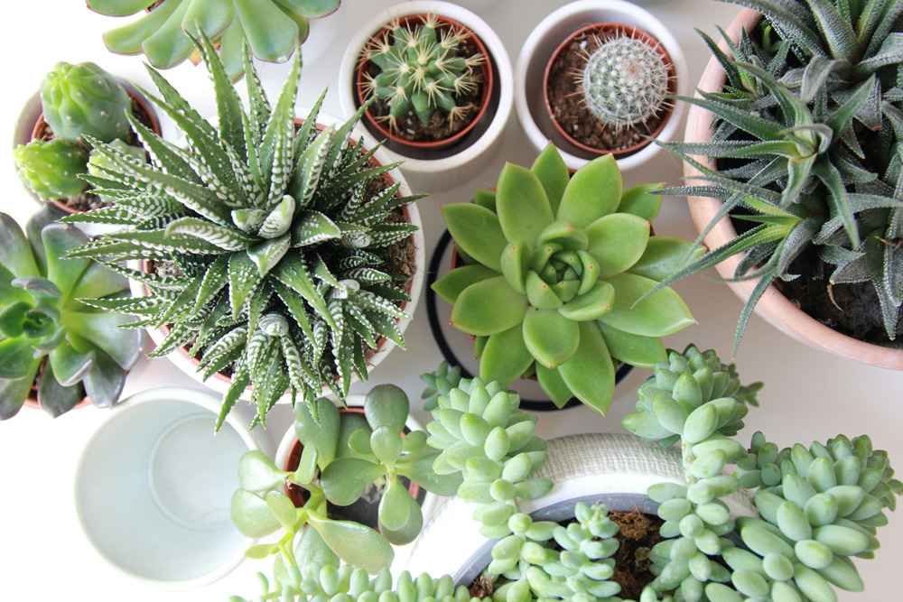

Unser Pflanzensortiment bringt frisches Grün in jeden Raum. Wir stellen die Auswahl laufend neu zusammen und achten auf gesunde, pflegeleichte Pflanzen für unterschiedliche Standorte. Besonders gefragt sind derzeit Zimmerpflanzen, kleine Sukkulenten und robuste Sorten, die auch für Einsteigerinnen und Einsteiger gut geeignet sind.
Im Laden beraten wir dich persönlich zu Licht, Pflege und dem passenden Blumentopf. Wenn du möchtest, stellen wir direkt vor Ort eine Kombination aus Pflanze und Topf zusammen, die zu deinem Zuhause passt. So bekommst du ein stimmiges Set, das sowohl optisch als auch praktisch zu deinem Alltag und Budget passt.


Zuständig für Pflanzen und Blumentöpfe
Hailey betreut unser Pflanzensortiment und hilft dir bei der passenden Auswahl.
Über Hailey
Hailey ist Gymnasiastin und liebt das Pflanzen und Umtopfen. Mit viel Neugier probiert sie unterschiedliche Kombinationen aus Pflanzen, Töpfen und Standorten aus und bringt frische Ideen in unseren Ladenalltag.
Mit ihrem grünen Daumen erstaunt sie Kundinnen und Kunden immer wieder mit verblüffenden Kreationen. Dank ihrem begeisternden Naturell entfacht sie bei manchen Kundinnen und Kunden das Pflanzenfieber. Ausserdem erklärt Sie verständlich, welche Pflanze zu welchem Ort passt und wie man lange Freude daran hat.